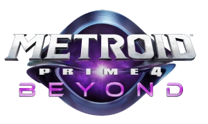

Metroid Prime 4: Beyond

| Release Date: | December 4th, 2025 |
| Genre: | First Person Shooter Metroidvania |
| Developer: | Nintendo, Retro Studios |
| Platform: | Nintendo Switch, Nintendo Switch 2 |
| Details: | Wikipedia |
It's finally here... After 18 years since the previous entry, Metroid Prime 4 has released for the Nintendo Switch. I haven't been waiting nearly as long as others for this sequel, as I just finished the original trilogy this past year, but I understand the excitement surrounding this game's release. The Prime series is this unique blend between classic metroidvanias and first-person shooting, that isn't seen very often outside of itself, so a fresh game for this experience is always welcome! There's quite a bit to talk about this game, but I'll try to keep most of the discussion limited to the beginning of the game or aspects unrelated to the story.
Gameplay
The overall moment-to-moment gameplay is stellar. Controlling Samus is fantastic with the dual-stick controls, a huge improvement over the Wii's motion controls for the previous two entries. Taking on enemies never felt clunky, as the lock-on was very helpful for staying on target, and can further adjust the lock-on to hit weak points. Moving around the zones felt good, both within the dungeons and out in the desert on the motorcycle. It felt polished and intuitive to explore the world and engage in combat, which is hard to nail!
Just, the exploration aspect of the game didn't feel as cohesive as previous entries. Rather than having this interconnected web of corridors connecting the whole map together, unlocking itself as you unlock abilities, this felt more akin to a classic 3-D Zelda game, where you have a central "hub zone", that acts like the connection point between the dungeons of the game. The desert hub really lives up to the desolate, empty feeling, because there's barely points of interest in the desert. It almost feels like they made this area as big as it is to justify the motorcycle, which is fun, but is excessive to drive in a straight line for minutes just to get to another zone... The dungeons don't really follow the traditional exploration I've come to expect from Metroid games, as a lot of them are really linear in their design. There is backtracking to explore new areas upon obtaining new abilities, but those areas are small. It would've helped a lot if within each dungeon there was way to travel between each as you progressed, speeding up travel time as a reward for making it further into the game.
The abilities you obtain throughout the game are pretty standard Metroid abilities, but given twists obtained by Samus's newfound psychic abilities. Makes sense that they've returned, as they're intuitive to use in a 3-D space, but their twists did introduce new applications for them for some interesting puzzles and boss fights. Scanning the environment for completion is back, and I wish they didn't include missable scans again... Didn't realize I missed some scans on the first boss, and there was no way to get them later on, so 100% completion was impossible. So just a word of warning if you plan on going for 100%!
Story & Worldbuilding
The story is fairly shallow. Samus arrives to aid the Federation fend off attacking Space Pirates at one of their facilities. Within the facility is an artifact that they've been studying, which is disrupted in the conflict. This teleports Samus to an uncharted planet known as Viewros, where she's given psychic abilities to explore the planet in hopes of finding a way home. Each area in which you're tasked with exploring holds ruins of an advanced civilization, whose demise is unraveled as you progress through the game. The worldbuilding of the planet is far more interesting than the main story, as the nuggets of information you obtain is enough to have you ponder what could've happened.
This adventure though, you're not alone. Others from the facility have been transported to Viewros, and while I didn't have a problem with most of them, the first guy, MacKenzie, is awful. His introduction has him making these quips you'd hear in a cheesy scene trying to being funny and relatable. I understand that it's a valid personality, there are people like that, but the fact that he's the "tutorial guy" means he's talking to you throughout the entire game, even if you didn't ask! He patches himself into comms to "give you hints" on where to go. I vividly remember one time he called me while I was exploring the desert, just to say "if you're ever lost, feel free to call me anytime! I'm always here to help Samus!". Bro called me just to say I can call him whenever. He's annoying, I don't like him.
The other characters though, they're pretty good. I do wish interacted with them a bit more directly than the occasional head nod, as having a back-and-forth conversation would help make them feel like they're not just talking to themselves. I think it helps give Samus more reason to figure out how to return home, to help out her fellow soldiers who depend of her.
Visuals & Audio
This is another aspect that they've knocked out of the park. The game is beautiful graphically, and it runs like butter on my Switch! Just like prior games, they added tons of detail and storytelling in just how the world is presented to you. Like areas in that it's raining, you can see the raindrops landing on Samus's helmet, slightly obscuring your vision. There isn't any pop-in of objects, it was immersive throughout the whole journey.
The music is in-line with prior games of the series, of this eerie ambience that sits in the background of the experience. It makes it feel desolate, empty, but missing of something. Really helps amplify the immersion while exploring the dungeons. I do wish they had more variation in music while exploring the desert, as it wasn't really even music, just ambient sounds. There is a radio feature built into the motorcycle, but it's locked behind a $40 amiibo, so... yeah...
Overall Thoughts
I enjoyed my time with this game. I wish it was a bit longer for the price, as I completed the game in roughly 13 hours. The foundations of the game, the controls, combat, and presentation were stellar and exactly what makes these Metroid games feel special. Just the world itself wasn't designed as a "Metroid" game, and that's a real bummer... Progression is quite linear, and you never get that feeling of the world opening up due to your growth, just can open new doors or obtain more upgrades. Viewros as a planet was cool to explore and uncover the mystery of its lost people, but the main story surrounding Samus was merely okay (would've been better without MacKenzie). I enjoyed my time with it, it scratched that itch of a metroidvania, inspiring me to try out some of the other Metroid games I haven't played yet, but not sure if I'd say it was worth the full pricetag...